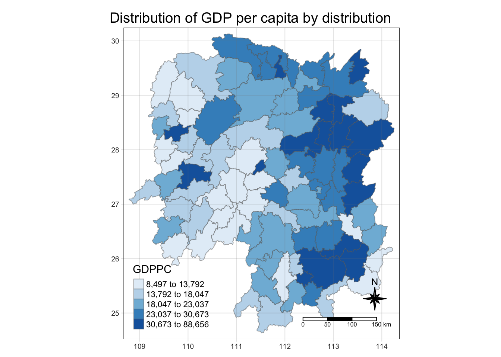
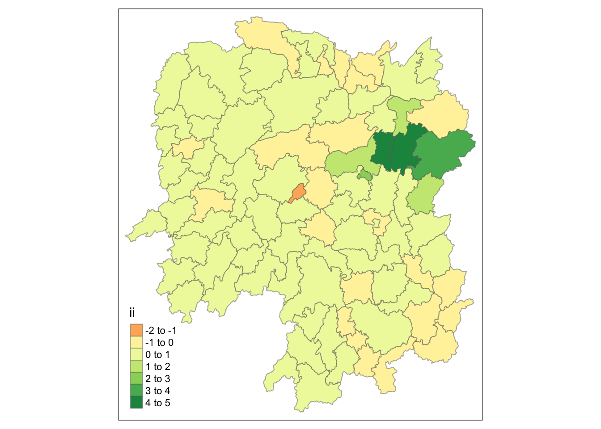
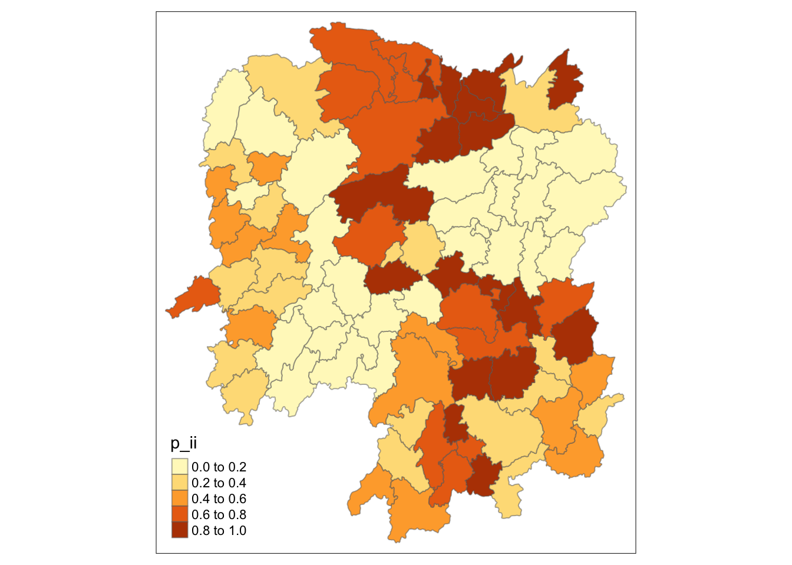
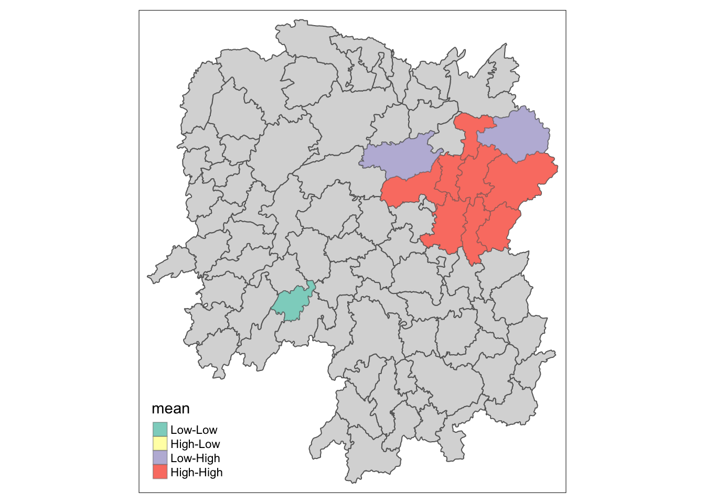
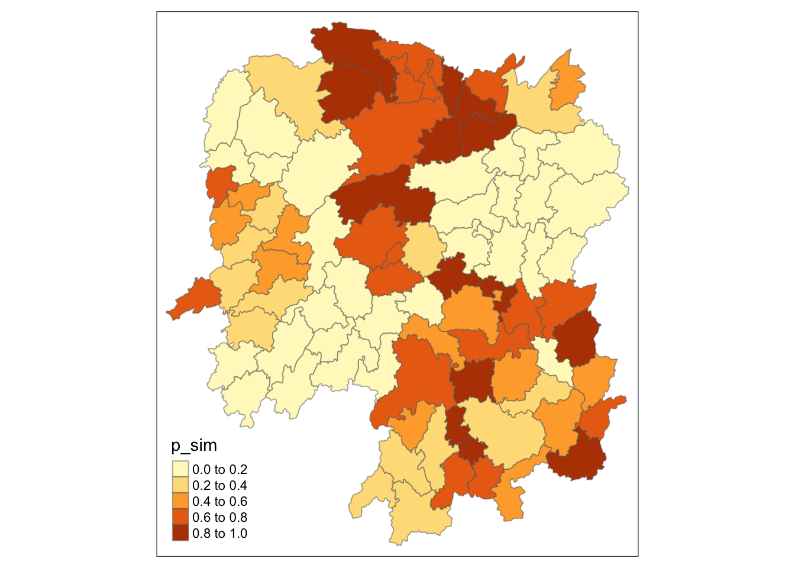

pacman::p_load(sf, sfdep, tmap, tidyverse)In Class Exercise 7
1.0 Overview
In this hands-on exercise, you will learn how to compute spatial weights using R. By the end to this in-class exercise, you will be able to:
- import geospatial data using appropriate function(s) of sf package,
- import csv file using appropriate function of readr package,
- perform relational join using appropriate join function of dplyr package,
- compute spatial weights using appropriate functions of spdep package, and
- calculate spatially lagged variables using appropriate functions of spdep package.
2.0 Installing R Packages
3.0 The Data
Two data sets will be used in this in-class exercise, they are:
Hunan county boundary layer. This is a geospatial data set in ESRI shapefile format.
Hunan_2012.csv: This csv file contains selected Hunan’s local development indicators in 2012.
4.0 Importing Data
4.1 Importing Geospatial Data
st_read() will make the data into sf format
hunan <- st_read(dsn = "data/geospatial",
layer = "Hunan")Reading layer `Hunan' from data source
`/Users/yashica/Desktop/xtc0/IS415-GAA/In-class_Ex/In-class_Ex07/data/geospatial'
using driver `ESRI Shapefile'
Simple feature collection with 88 features and 7 fields
Geometry type: POLYGON
Dimension: XY
Bounding box: xmin: 108.7831 ymin: 24.6342 xmax: 114.2544 ymax: 30.12812
Geodetic CRS: WGS 84You might face an error if you didn’t click the earlier code chunk (packages) + all your environment variables are cleaned away. Happens coz st_read() cannot find the sf package and hence sf object.
This is a simple polygon geometry. How can we tell? Go to the “geometry” column aka sfc column. This is geographic coordinate system not projected coordinate system.
Need projected coordinate system to do distance-based metrics. As such, may need to do some conversion.
4.2 Importing Aspatial Data
hunan2012 <- read_csv("data/aspatial/Hunan_2012.csv")Rows: 88 Columns: 29
── Column specification ────────────────────────────────────────────────────────
Delimiter: ","
chr (2): County, City
dbl (27): avg_wage, deposite, FAI, Gov_Rev, Gov_Exp, GDP, GDPPC, GIO, Loan, ...
ℹ Use `spec()` to retrieve the full column specification for this data.
ℹ Specify the column types or set `show_col_types = FALSE` to quiet this message.After importing hunan2012 dataframe, we get it as a tibble dataframe not sf. It has no geometric aspect as a tibble dataframe.
read_csv() is from readr, from a family of tidyverse. Even though we didn’t load readr in pacman, we got it when we downloaded tidyverse.
Many variables aka columns but we’re only interested in a few like GDP.
5.0 Combine Both Dataframe Using Left Join
Be careful, one is a sf dataframe and another one is a tibble dataframe. Tibble dataframe has no geometric aspect.
When performing relational join, if you want to retain geometric column, left input should be the one with sf dataframe.
Now, we’ll be doing a left join function from dplyr (from tidyverse).
hunan_GDPPC <- left_join(hunan, hunan2012) %>%
select(1:4, 7 ,15)Joining with `by = join_by(County)`# after combining the dataset, you use select() to choose the columns that you want
# run the left_join first to see the combined dataset. Then from there you know what column names you want to keep and can easily use select()
# in a typical join, you'll need to identify a common unique identifier
# but in this case, we did not do that
# coz there's in-built intelligence - if it finds common column name in the 2 datasets, it will try to join.
# you will get an error even if the column names are the same - if the length is diff and the values have different cases.
# left-join function is case sensitive
#if there are no common column names in the dataset that you wish to left join, you will need to state the column names from each dataset5.1 Plotting Choropleth Map
tmap_mode("plot")tmap mode set to plottingtm_shape(hunan_GDPPC) +
tm_fill("GDPPC",
style = "quantile",
palette = "Blues",
title = "GDPPC") +
# tm_fill builds the polygon
tm_layout(main.title = "Distribution of GDP per capita by distribution",
main.title.position = "center",
main.title.size = 1.2,
legend.height = 0.45,
legend.width = 0.35,
frame = TRUE) +
tm_borders(alpha = 0.5) +
tm_compass(type = "8star", size = 2) +
tm_scale_bar() + ## automatically changed to km (if tmap detects in decimal, it will change to km)
tm_grid(alpha = 0.2)
tmap_mode we set to “plot” to keep it static. We can easily change it to “view” to get an interactive map instead.
tm_field + tm_border will give you a polygon
6.0 Identify Neighbours Method
6.1 Contiguity Neighbours Method
In the code chunk below, st_contiguity() is used to derive a contiguity neighbour list by using Queen’s method.
https://sfdep.josiahparry.com/reference/st_contiguity.html for documentation
cn_queen <- hunan_GDPPC %>%
mutate(nb = st_contiguity(geometry),
.before = 1)
# nb is a list
# results will be stored as sf dataframe
# st_contiguity is performed on geometry column of hunan_GDPPC
# .before = 1 to put the newly created column before the first original column in hunan_GDPPCUsing the steps learned, derive a contiguity neighbour list using Rook’s method.
cn_queen will have 1 extra column more than hunan_GDPPC. You can see the corresponding neighbouring place under NAME_3 column in cn_queen.
cn_rook <- hunan_GDPPC %>%
mutate(nb = st_contiguity(geometry),
queen = FALSE,
.before = 1)
# if you want to use bishop, must use spdep package instead. Normally, we do not use bishop method.6.2 Computing Continguity Weights
6.2.1 Contiguity Weights: Queen’s method
wm_q <- hunan_GDPPC %>%
mutate(nb = st_contiguity(geometry),
wt = st_weights(nb),
.before = 1)
# now I'll have 2 new columns nb and wtw is a row standardised metric. mutate() is a tidy way of doing it.
7.0 Computing Global Moran’I
moranI <- global_moran(wm_q$GDPPC,
wm_q$nb,
wm_q$wt)7.1 Performing Global Moran’I Test
global_moran_test(wm_q$GDPPC,
wm_q$nb,
wm_q$wt)
Moran I test under randomisation
data: x
weights: listw
Moran I statistic standard deviate = 4.7351, p-value = 1.095e-06
alternative hypothesis: greater
sample estimates:
Moran I statistic Expectation Variance
0.300749970 -0.011494253 0.004348351 When we do a Global Moran’I test, you get the test result and test statistic. From the output, we can see that the p-value is way smaller than the xxx significance level. SO…
The Moran I statistic > 0 so there’s clustering.
7.1.1 Performing Global Moran’I Permutation Test
set.seed(1234)Set the seed so that the permutation won’t keep changing. If it involves simulations, please set seed.
global_moran_perm(wm_q$GDPPC,
wm_q$nb,
wm_q$wt,
nsim = 99)
Monte-Carlo simulation of Moran I
data: x
weights: listw
number of simulations + 1: 100
statistic = 0.30075, observed rank = 100, p-value < 2.2e-16
alternative hypothesis: two.sidedGreater the number of simulations (nsim), the more stable.
The 2 p-values (comparing against the previous cell), we can tell the p-values are almost the same.
7.1.2 Computing Local Moran’s I
lisa <- wm_q %>%
mutate(local_moran = local_moran(
GDPPC, nb, wt, nsim = 99),
.before = 1) %>%
unnest(local_moran)
lisaSimple feature collection with 88 features and 20 fields
Geometry type: POLYGON
Dimension: XY
Bounding box: xmin: 108.7831 ymin: 24.6342 xmax: 114.2544 ymax: 30.12812
Geodetic CRS: WGS 84
# A tibble: 88 × 21
ii eii var_ii z_ii p_ii p_ii_…¹ p_fol…² skewn…³ kurtosis
<dbl> <dbl> <dbl> <dbl> <dbl> <dbl> <dbl> <dbl> <dbl>
1 -0.00147 0.00177 4.18e-4 -0.158 0.874 0.82 0.41 -0.812 0.652
2 0.0259 0.00641 1.05e-2 0.190 0.849 0.96 0.48 -1.09 1.89
3 -0.0120 -0.0374 1.02e-1 0.0796 0.937 0.76 0.38 0.824 0.0461
4 0.00102 -0.0000349 4.37e-6 0.506 0.613 0.64 0.32 1.04 1.61
5 0.0148 -0.00340 1.65e-3 0.449 0.654 0.5 0.25 1.64 3.96
6 -0.0388 -0.00339 5.45e-3 -0.480 0.631 0.82 0.41 0.614 -0.264
7 3.37 -0.198 1.41e+0 3.00 0.00266 0.08 0.04 1.46 2.74
8 1.56 -0.265 8.04e-1 2.04 0.0417 0.08 0.04 0.459 -0.519
9 4.42 0.0450 1.79e+0 3.27 0.00108 0.02 0.01 0.746 -0.00582
10 -0.399 -0.0505 8.59e-2 -1.19 0.234 0.28 0.14 -0.685 0.134
# … with 78 more rows, 12 more variables: mean <fct>, median <fct>,
# pysal <fct>, nb <nb>, wt <list>, NAME_2 <chr>, ID_3 <int>, NAME_3 <chr>,
# ENGTYPE_3 <chr>, County <chr>, GDPPC <dbl>, geometry <POLYGON [°]>, and
# abbreviated variable names ¹p_ii_sim, ²p_folded_sim, ³skewnessNeed the unnest method - without it, there’ll be error. Convert from list to sth else via unnest method. Need this for our use case coz we want to make a map.
In the spdep steps for hands-on, there’s no need to unnest after left-join. WHYY
In hands-on exercise, spdep, you need to label. But for sfdep there’s no need coz we it’s automatically labelled when you click on the table on the upper right of the window.
Use LISA’s mean (from the column of the data table)
tmap_mode("plot")tmap mode set to plottingtm_shape(lisa) +
tm_fill("ii") +
tm_borders(alpha = 0.5) +
tm_view(set.zoom.limits = c(6,8))Variable(s) "ii" contains positive and negative values, so midpoint is set to 0. Set midpoint = NA to show the full spectrum of the color palette.
tmap_mode("plot")tmap mode set to plottingtm_shape(lisa) +
tm_fill("p_ii") +
tm_borders(alpha = 0.5) 
p_ii is not the good one. p_ii_simulation is better.
7.1.3 Visualising Local Moran’s I
lisa_sig <- lisa %>%
filter(p_ii < 0.05)
# first plot the grey output
tmap_mode("plot")tmap mode set to plottingtm_shape(lisa) +
tm_polygons() +
tm_borders(alpha = 0.5) +
# then plot the red and purple spots via the mean
tm_shape(lisa_sig) +
tm_fill("mean") +
tm_borders(alpha = 0.4)Warning: One tm layer group has duplicated layer types, which are omitted. To
draw multiple layers of the same type, use multiple layer groups (i.e. specify
tm_shape prior to each of them).
Not a good code chunk. Please improve it - answer is found in the hands-on exercise. Instead of using Local Moran, use gi statistics or gstar for your Take-Home Exercise 2.
8.0 Hot Spot and Cold Spot Analysis
HCSA <- wm_q %>%
mutate(local_Gi = local_gstar_perm(
GDPPC, nb, wt, nsim=99),
.before=1) %>%
unnest(local_Gi)
HCSASimple feature collection with 88 features and 16 fields
Geometry type: POLYGON
Dimension: XY
Bounding box: xmin: 108.7831 ymin: 24.6342 xmax: 114.2544 ymax: 30.12812
Geodetic CRS: WGS 84
# A tibble: 88 × 17
gi_star e_gi var_gi p_value p_sim p_fol…¹ skewn…² kurto…³ nb wt
<dbl> <dbl> <dbl> <dbl> <dbl> <dbl> <dbl> <dbl> <nb> <lis>
1 -0.00567 0.0115 0.00000812 9.95e-1 0.82 0.41 1.03 1.23 <int> <dbl>
2 -0.235 0.0110 0.00000581 8.14e-1 1 0.5 0.912 1.05 <int> <dbl>
3 0.298 0.0114 0.00000776 7.65e-1 0.7 0.35 0.455 -0.732 <int> <dbl>
4 0.145 0.0121 0.0000111 8.84e-1 0.64 0.32 0.900 0.726 <int> <dbl>
5 0.356 0.0113 0.0000119 7.21e-1 0.64 0.32 1.08 1.31 <int> <dbl>
6 -0.480 0.0116 0.00000706 6.31e-1 0.82 0.41 0.364 -0.676 <int> <dbl>
7 3.66 0.0116 0.00000825 2.47e-4 0.02 0.01 0.909 0.664 <int> <dbl>
8 2.14 0.0116 0.00000714 3.26e-2 0.16 0.08 1.13 1.48 <int> <dbl>
9 4.55 0.0113 0.00000656 5.28e-6 0.02 0.01 1.36 4.14 <int> <dbl>
10 1.61 0.0109 0.00000341 1.08e-1 0.18 0.09 0.269 -0.396 <int> <dbl>
# … with 78 more rows, 7 more variables: NAME_2 <chr>, ID_3 <int>,
# NAME_3 <chr>, ENGTYPE_3 <chr>, County <chr>, GDPPC <dbl>,
# geometry <POLYGON [°]>, and abbreviated variable names ¹p_folded_sim,
# ²skewness, ³kurtosisLocal G* : include itself, so ii != 0, no permutation Local G : exclude itself
8.1.1 Visualising p-value of HCSA
tmap_mode("plot")tmap mode set to plottingtm_shape(HCSA) +
tm_fill("p_sim") +
tm_borders(alpha = 0.5)
GDPPC <- read_csv("data/aspatial/Hunan_GDPPC.csv")Rows: 1496 Columns: 3
── Column specification ────────────────────────────────────────────────────────
Delimiter: ","
chr (1): County
dbl (2): Year, GDPPC
ℹ Use `spec()` to retrieve the full column specification for this data.
ℹ Specify the column types or set `show_col_types = FALSE` to quiet this message.9.0 Creating a Time Series Cube
GDPPC_st <- spacetime(GDPPC, hunan,
.loc_col = "County",
.time_col = "Year")GDPPC_nb <- GDPPC_st %>% #activate() means gg to work on geometric table activate(“geometry”) %>% mutate( nb = include_self(st_contiguity(geometry)), wt = st_weights(nb) # nb is neighbourhood list and wt is weight metric ) %>% set_nbs(“nb”) %>% set_wts(“wt”)